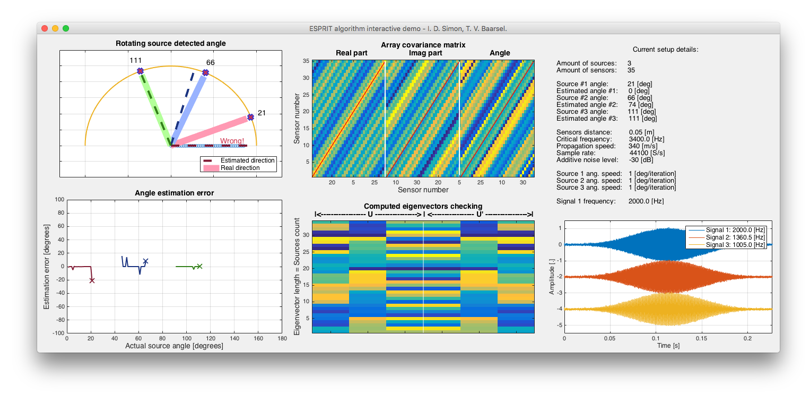
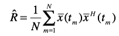
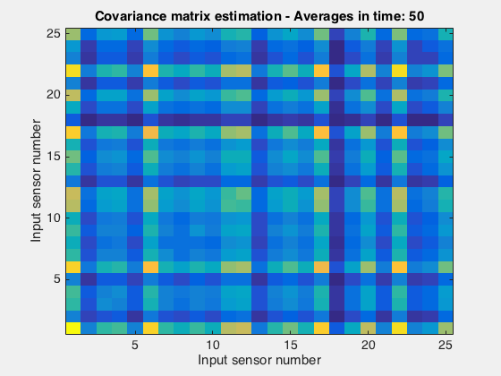
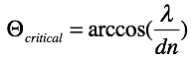
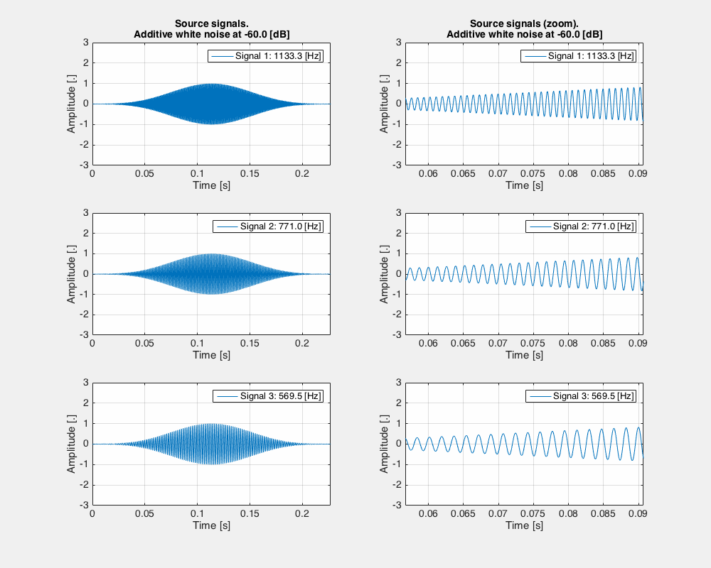
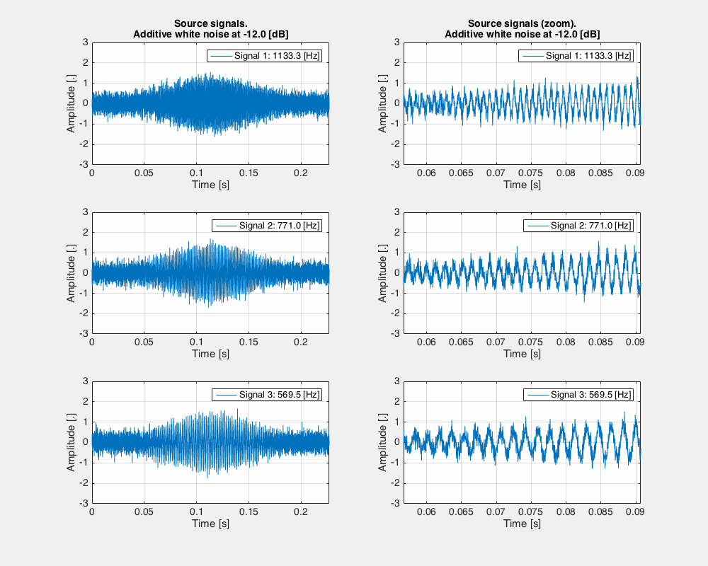
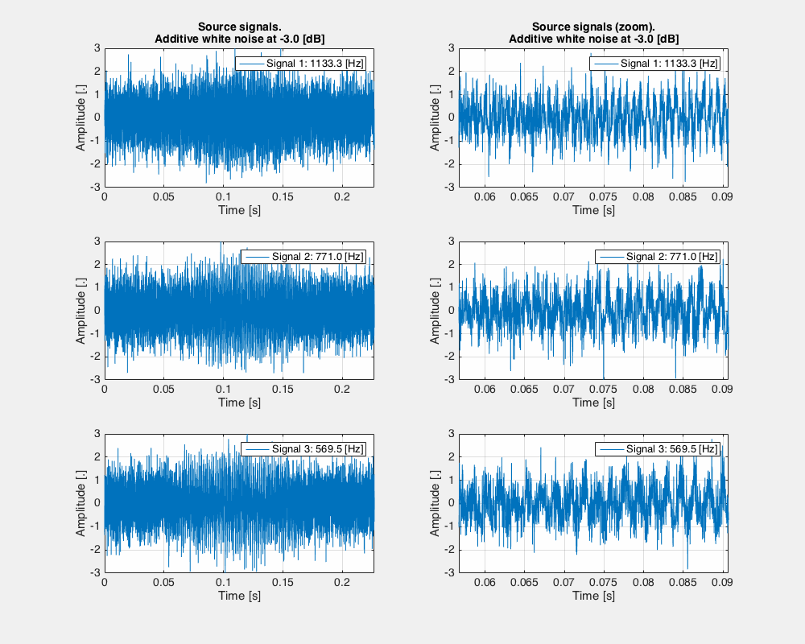
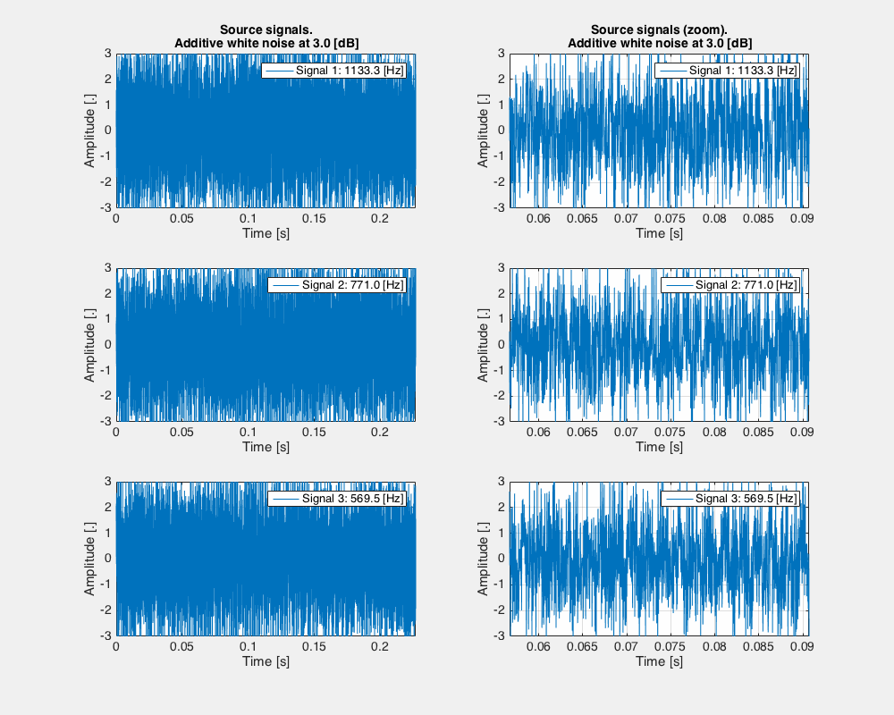

ESPRIT algorithm interactive demo
ESPRIT algorithm interactive demo

Ignacio Dominguez Simon
Tobias Van Baarsel
Aalborg University - 2015
Document description
The present document intends to show the works done while studying the ESPRIT beamforming algorithm on the course Array and Sensor Signal Processing.
Implemented algorithm
The ESPRIT algorithm defines a method for estimating the impinging angles of a number of sources using a sensor array.
The array setup assumes are the following:
- the array is formed by a number of identical sensors, equally spaced on a line
- the sources are far from the array, as compared to the sensors’ spacing, such that a plane wave is assumed to reach the array
- the signal from each source arrives at the same time to all sensors (time difference is negligible), but with a measurable phase difference
- the phase difference between sensors is modeled using complex signals, where the argument corresponds to the phase
- the origin of angles (zero degrees) corresponds to the line formed by the array
- the number of sources (impinging waves) is known beforehand
- given the symmetry of the array, it can not be distinguished whether the sources are on one side or the other, so one side will be used for representing the results, just for convenience
The algorithm relies on the ability to properly estimate the covariance matrix from the signals captured by all sensors. The reason for this comes from the fact that the signal will be very similar in all sensors, with the main difference coming from the phase shifting produced by a different traveling path. Therefore, those similarities will be spread across all sensors in a manner that depends on the impinging angle. In other words, the way any two sensors’ signals are related (covariance) is defined by the impinging angle, so all sensors are compared pairwise, producing the array covariance matrix.
The covariance matrix estimation
It is not known, since the statistics of the sources are usually not known, but it can be estimated with enough accuracy if:
- the sensed signals do not present a high level of noise (that is, most sensed data corresponds purely to the source signal)
- the sensors are sampled for a long enough period of time
It is estimated, from a series of samples of all sensors by:

Eq. 1: estimation of covariance matrix.
Which is computed by taking a sample of each sensor for every sampled time t=tm —> x(tm), and performing a vector multiplication, that yields a square matrix. This is repeated for all times data is sampled from sensors, and accumulated. The interpretation of the obtained matrix is that pairwise comparison introduced before, that is performed by multiplying sampled sensors’ signals. Statistically, if enough samples are taken, those samples that are more similar will produce higher product values, reflecting the strength of their relation.
The estimated covariance matrix is studied computing its eigenvectors, that can offer information about patterns of relationships, directly related to the impinging angles. Hence, the reliability of the whole method will be compromised if not properly estimated.
Construction of the estimated covariance matrix
As more samples are used to estimate the covariance matrix, it should be getting closer to the real covariance matrix. Here it is presented a graphical example of how it “evolves” as more samples are included in the estimation.

Fig. 1: formation of an estimated covariance matrix with a single impinging wave.
As it can be seen in figure 1, it “stabilizes” to its final shape after approximately 7000 samples. It shows a main diagonal with the highest values (as every sample is always mostly related to itself) and several secondary diagonals, both with high and low levels. The existence of high level secondary diagonals means that the array is long enough to provide two samples that go on phase (there has been a full phase rotation between them). Likewise, the low level secondary diagonals respond to pairs of sensors that receive completely out of phase signals. When the amount of samples used for the estimation is low (or if the noise level is too high) the final shape of the covariance matrix can not be seen.
Increasing the size of the array improves the estimation quality, as it translates in having a larger sampling of the space (that is, sampling the wave in more points at the same time). This can lead to more accurate estimation of the impinging wave direction, specially in noisy environments, since the noise is more easily averaged out. There is still, always a certain impinging angle for which the array will not benefit much from having more sensors, as they will only introduce redundant information. That will occur when the angle is such that the projection of the wavelength is multiple of the distance between array elements, as given by:

Eq. 2: relationship between angle and wavelength for matching the array element distance.
Being d the distance between array elements and lambda the wavelength of the impinging wave. In such case, it will not improve directly the estimation of the impinging angle, but it will help with the noise averaging.
An example of the covariance matrix estimation with a larger array and several (three) impinging waves is shown on figure 2.

Fig. 2: formation over time of the estimation of the covariance matrix. Larger array and three impinging waves.
In both examples, the signals used consist of a sinus signal modulated in amplitude using a hamming window two times, as shown in figure 3. In the first example, only signal number one was used.

Fig. 3: sources’ signals used.
Simulation program
Program capabilities
The implemented program (in Matlab) can perform a simulation of any number of sources, stationary or rotating around the array. The array, being uniform and linear, can be configured to conduct different case simulations.
The main simulation parameters are:
- amount of sources
- initial angle of sources (individually selectable)
- angular speed of sources (individually selectable, allowing for no speed)
- amount of elements in the array
- separation between array elements
- frequency of sources (individually selectable)
- propagation speed (unique for all sources)
- sensors noise floor (unique for all sensors)
- length of sources’ signals (unique for all sources)
Simulation execution
The desired simulation parameters are set in the beginning of the program as a form of constants:
- AMOUNT_OF_SENSORS = 35;
- SENSORS_POSITION_ORIGIN = [0 0];
- SENSORS_DISPLACEMENT_VECTOR = [0.05 0];
- SENSOR_NOISE = -30;
- PROPAGATION_SPEED = 340;
- SAMPLE_RATE = 44100;
- AMOUNT_OF_SOURCES = 3;
- INPUT_SIGNAL_LENGTH = 10000;
- SOURCES_ANGLES_ORIGIN = [0 45 90];
- SOURCES_ANGLES_SPEED = [1 1 1];
- INPUT_SIGNAL_FREQS = [1133.3 771.0 569.5];
Most variables are self explaining, but a few are worth a note:
- the sensors displacement vector defines the direction in which the array grows, in cartesian coordinates, from the point of origin
- the sensor noise is expressed in decibels, as the attenuation of white noise (zero mean and unity variance) before is added to the “sensed” signals
- the sources angular speed is expressed in degrees per iteration, that is, how many degrees they rotate on each iteration of the simulation
- the signal frequencies are set in Hertz, but they must be set considering they will not produce spatial aliasing for the given array element distance
After the simulation parameters are set, the program can be run. Initially, it will go through all needed iterations, showing the outcome of each one (see figure 4). When all are completed, the window will remain and the user will be able to use the left and right arrow keys to navigate through each iteration.

Fig. 4: view of the simulation’s graphical output during the analysis.
Demo cases
With the set of parameters, many different cases can be simulated. Here are presented some notes from a few examples of special interest.
Single source
When a single source is rotating around the array, the ESPRIT algorithm is able to detect the impinging angle almost with no error, even when the noise is higher than the source signal. It was tested on:
- clean environment: noise at -60 dB (figure 5)
- moderate noise level: noise at -12 dB (figure 6)
- high noise level: noise at -3 dB (figure 7)
- extremely high noise level: noise at +3 dB (figure 8)
In all cases, the algorithm was able to find out the impinging angle with very little to no error. In conclusion, it seems that the algorithm is extremely robust when a single source is considered, even in very noisy environments. From the mentioned figures, only the first signal is used in this case.
This is, naturally, not a very realistic scenario, as reflections will introduce “image sources”. Therefore, is more appropriate to take into consideration the behavior of the algorithm with multiple sources.

Fig. 5: sources’ signals used.

Fig. 6: sources’ signals used.

Fig. 7: sources’ signals used.
Multiple sources
Introducing signals two and three reveals one of the main flaws of uniform linear arrays, the angle dependent reliability. Having now more than once source, the covariance matrix estimation has to be more precise, so that the extracted eigenvectors can provide a more accurate estimation of the impinging angles (otherwise, the eigenvectors are noisier, and it’s more difficult to estimate an angle from them). Given the geometry of the array, a larger phase difference per degree is created in front of the array (close to 90 degrees) than in the sides (close to 0 or 180 degrees). This proves to have a big impact in the estimation of the impinging angles even for clean environments.
In the simulated cases, the errors in the estimated angles were as large as 60 degrees when the real source is not located within ±30 degrees of the frontal direction.
Increasing the level of noise in this case, seems to have little impact when the sources are located within the ±30 degrees of the frontal direction, and to subtly help the localization on the sides.
Program download
Download the Matlab script here.